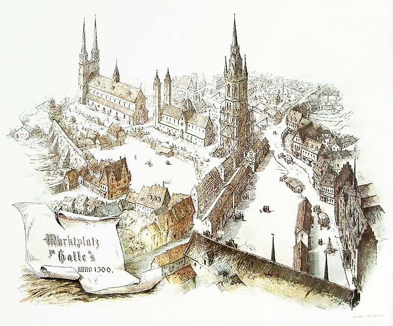

Ein spätmittelalterlicher Markt
 Darstellung des "Marktplatzes von Halle um 1500", von unbekannt, Leipzig, 1889 erstellt
Informationstext über den Markt
Der Markt war der Mittelpunkt vieler Städte. Auf den Marktplätzen fand der gesamte Handel statt. Der Markt war zudem oft ein Treffpunkt und eine Möglichkeit, dem Alltag des Mittelalters zu entfliehen: Gaukler (Sänger, Jongleure, Feuerschlucker ...) belustigten die Menschen. An verschiedenen Ständen konnten sich die Menschen mit benötigten Waren eindecken. Ein Markt ermöglichte es den Bürgern der Stadt und den Menschen aus dem Umland zudem, ihre Waren und Dienste anzubieten.
Es wurden nicht nur Grundnahrungsmittel angeboten, auch andere Produkte wie z.B.: Keramik-, Metall- oder Holzwaren. Auch Gewürze,Stoffe oder Wein wurden von Fernkaufmännern verkauft.
In einigen Städten gab es verschiedene Märkte, die auf unterschiedliche Waren spezialisiert waren. So gab es zum Beispiel einen Fischmarkt, einen Gewürzmarkt oder einen Gemüsemarkt. Einmal im Jahr fand ein Jahrmarkt statt.
Damit ein Markt funktionierte, gab es strenge Regeln, die von den Verkäufern und Käufern beachtet werden mussten: Zum einen war der Markt ein geschützter Bereich, auf dem ein Marktfrieden herrschte. Zum anderen waren die Maße der Waren, wie z.B.: Länge von Stoffen,oder Gewicht und Preise von Brötchen festgeschrieben. Sie wurden von einem Marktaufseher kontrolliert.
Bezahlt wurde im Spätmittelalter mit Münzen. Es gab jedoch keine einheitliche Währung. Viele Städte besaßen neben dem Recht einen Markt abzuhalten, dem Marktrecht, ein Münzrecht. Sie konnten also eigene Münzen herstellen. So entstanden viele unterschiedliche Währungen. Mit Hilfe von einer Münzwaage wurde auf einem Markt das Gewicht der Münzen und so der Wert ermittelt.
Ein Marktplatz wurde nicht nur genutzt, um mit Waren zu handeln, oder sich an den Gauklern, Jongleuren, Artisten und Sängern an Markttagen zu erfreuen, es wurden auch Bürgerversammlungen abgehalten, Feste gefeiert und Ratsbeschlüsse verkündet. Deshalb wurden an Marktplätzen oft Rathäuser gebaut. Auch wohlhabende Bürger, wie z.B.: Kaufleute bauten dort ihre Häuser. Oft waren es mehrgeschossige Fachwerkhäuser. Einige der Häuser hatten ein gemauertes Erdgeschoss. Dadurch wurden die Wände vor Feuchtigkeit geschützt. Mit einem Rollenaufzug, der an einem herausragenden Balken befestigt war, konnten die Kaufleute ihre Waren in das Dachgeschoss transportieren und dort lagern. In manchen Städten gab es im Spätmittelalter auch Markthäuser. In ihnen konnte ebenfalls etwas gelagert und verkauft werden.
Der Marktplatz musste gut erreichbar sein. Deswegen führten die wichtigsten Straßen einer Stadt zum Markt.